|
Scheda n. 1 |
|
| Denominazione: | C 16 |
| Costruttore: | Cevoli Giancarlo |
| Periodo di costruzione: | 1974 – 1977 ( 2200 ore lav.) |
| Struttura | Alluminio 7/10 mm : rivettato |
| Gonna | Bag unico con dita segmentate |
| Motorizzazione: | 38 CV – avviamento elettrico - monomotore |
| Spinta: | non dichiarata |
| Carico utile max: | 210 Kg |
| Pressione al cuscino: | 16 mm H2O |
| Dimensioni appross.: metri | 4,12 x 2,80 h = 1,04 |
| Peso a vuoto: | 165 Kg |
| Vel. max: | 50 Km/h |
| Particolarità costruttive: | Aria per spinta e sollevamento generata da due
ventilatori centrifughi gemellati, rivettati in alluminio, auto
costruiti. Onde ridurre l’ingombro a m. 2,20 per agevolarne il trasporto, le fiancate sono ripiegabili verso il basso: una seconda rotazione dei fianchi porta l’ingombro a m. 1,5 |
| Funzionante | Si |
| Esistenza alla data 2011 : | Esistente alla data 2010 |
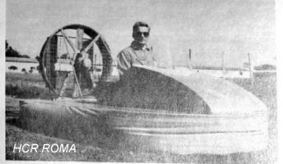
|
Scheda n.2 |
|
| Denominazione: | Leda 1 |
| Costruttore: | Bettocchi Tito (cap. A. Militare) |
| Periodo di costruzione: | 1969-1970 |
| Struttura | Legno compensato marino |
| Riserva di galleggiamento | 200% |
| Motorizzazione: | n. 2 6HP Aspera Motors 2 tempi mod. AH81, sollevamento e spinta-bimotore |
| Spinta: | gradiente salita da fermo 1:5 |
| Gonna | Brevettata: doppio airbag concentrico in PVC |
| Carico utile max: | 100 Kg. |
| Pressione al cuscino: | 55 mm H2O |
| Dimensioni appross.: metri | 3x1,80 h=1,5 |
| Peso a vuoto: | 110 Kg |
| Vel. max su acqua: | 45 Km/h |
| Particolarità costruttive: | Aria per spinta e sollevamento generata da due ventilatori assiali cm. 50 e cm 95 realizzati con l'ausilio della A. M. |
| Funzionante | Si |
| Disperso | Esistono ancora soltanto i due motori Aspera. |
| Note | Furono realizzati anche Leda 2 (posti) e Leda 3 (posti) |
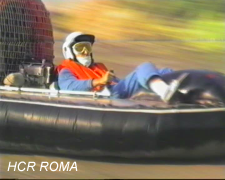
|
Scheda n.3 |
|
| Denominazione: | BERTETTI |
| Costruttore: | Bertetti Paolo (To ) |
| Periodo di costruzione: | 1985 |
| Struttura | Alluminio crudo 10/10 mm : rivettata |
| Gonna | Bag unico |
| Motorizzazione: | 40 CV – avviamento a strappo – monomotore Rotax 447 |
| Utilizzo | Competizione |
| Trasmissione | Cinghia |
| Spinta: | Non dichiarata – circa 50 kg |
| Carico utile max: | 100 Kg |
| Pressione al cuscino: | 48 mmH2O |
| Dimensioni appross.: metri | 2,8 x 1,7 h = 1 |
| Peso a vuoto: | 120 Kg circa |
| Vel. max su acqua: | 60 Km/h |
| Particolarità costruttive: | Aria di spinta e sollevamento generata da un solo
ventilatore. Auto costruito, rimarchevole: il pilota guida seduto in posizione supina inoltre dispone di un setto deflettore apribile, posizionato tra i piedi, il cui rilascio consente al pilota una maggiore accelerazione in partenza al VIA! |
| Note | Facilmente trasportabile e lievemente sovrasterzante. |
| Funzionante | Sì |
| Esistenza alla data 2011 : | non confermata. |
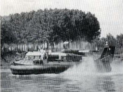 |
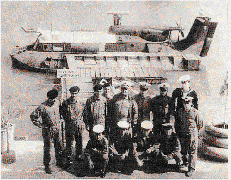 |
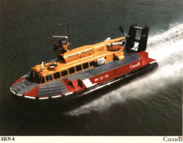 |
|
Risalita del PO (1972)
(foto serg.te Maurizio Matellicani) |
Scafo all'ormeggio sul Po (anno 1972) (Foto Sig. Maurizio Veronesi- Marinai d'Italia) |
Scafo Canadese SR-N6 in navigazione |
|
Scheda n. 4 |
|
| Tipo - Denominazione: | SR-N6 Classe Winchester - HC 9801 Veicolo a cuscino d'aria |
| Costruttore : | BHC - East Cowes, Isole di Wight - Gran Bretagna |
| Periodo di costruzione: | Impostato 24-4-1968- Cost. N. 36 - Varato 24-10-1968 |
| Data e luogo di consegna a MMI | 5-11-1968 a Taranto - Ass.to a Venezia, Unità interforze |
| Dislocamento | 10 tonnellate |
| Gonna | Bag con dita |
| Scafo | In lega leggera di alluminio resistente alla corrosione |
| Motorizzazione: | Turbina a gas Rolls Royce Gnome Marine 1500 Hp |
| Elica spinta | 4 pale diam. m. 2,7- non convoglita - passo variabile |
| Ventola sollevamento | Centrifuga 12 pale, diam. m 2,1 |
| Utilizzo | Sbarco incursori e pattugliamento coste |
| Comandanti l'unità 1970/1978 | Ten. di Vascello G. Gentile, E. Moffa, G. Roncato |
| Carico utile max: | 3 tonnellate |
| Altezza cuscino metri: | 1,2 |
| Dimensioni appross.: metri | 14,8 x 7,7 - altezz sui pattini 3,8 |
| Manutenzioni più frequenti | Turbina (routine), elica (erosione) - rari interventi al bag |
| Vel.max su acqua: | 75 nodi |
| Particolarità costruttive: | Aria di spinta e sollevamento generata da una unica turbina |
| Limite operazioni | Vento 30 nodi e mare forza 3 circa |
| Note | Di questa classe della BHC furono implementate diverse versioni a partire da Mk1, con potenza e dimensioni crescenti, sino a Mk6A B et C con due eliche propulsive convogliate e motore di circa 1400 HP |
| Esistenza alla data 2011 : | Radiato il 30-4-1982 |
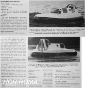 |
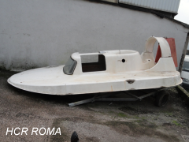 |
|
Scheda n. 5 |
|
| Denominazione: | BT4-74 |
| Tipo: |
Bimotore, bielica |
| Costruttore : | Bettocchi Tito |
| Periodo di costruzione: | 1974 |
| Struttura | VTR |
| Gonna | Bag doppio, brevetto Bettocchi |
| Motorizzazione spinta: | 42 CV JLO bicilindrico |
| Avviamento: |
elettrico |
| elica bipala aeron. | diam. 107 cm - convogliata |
| Motorizzazione sollevamento: | 21 CV JLO 295 cc monocil. 3200 g/m– avviamento elettrico |
| Altezza di sollevamento | 25 cm onde - max 60 cm |
| Carico utile max: | 3 persone 210Kg |
| Pressione al cuscino: | 55 mmH2O |
| Dimensioni appross.: metri | 5,2 x 2,6 h = 1,45 sui calcagnoli (2 longitudinali ) |
| Peso a vuoto: | 390 Kg |
| Vel. max: | 65Km/h |
| Particolarità costruttive: | n.2 timoni inclinati per agevolare le virate. Il convogliatore di sollevamento invia l’aria direttamente sotto lo scafo e nel bag invia soltanto una piccola parte. |
| Funzionante | Si |
| Esistenza alla data 2011 : | In stato di abbandono |
|
Scafo BT4-74 ELENCO PARTI ESISTENTI AL GENNAIO 2011 |
|
| Località | Terni |
| Proprietario | Reitano Mario |
| Gonna | Bag Bettocchi |
| Struttura scafo | VTR fortemente deteriorata - con 3 timoni e parabrezza |
| Sportello ad ala di gabbiano | 1 pezzo - plexiglass |
| Motorizzazione: spinta | JLO bicilindrico 800 cc - ( mancante un pistone e scarico ) |
| Elica di spinta | Bipala in legno |
| Telaio motore | In acciaio |
| Motorizzazione : sollevamento | 19 CV JLO 295 cc completo ( senza scarico ) |
| Riduttore di giri | Scatola in lamiera – riduz. a cinghie trapezoidali |
| Ventola di sollevamento | 12 pale |
|
Elenco parti
sicuramente mancanti
|
|
| 1. Comandi interni | Volante ( automobil. ) – comandi motori - avv. acustici-luci |
| 2. Strumenti | Probabili: Liv. Carb.- Tensione batteria |
| 3. Sedili | Probabili 3 preformati in PVC |
| 4. Tergicristallo e spazzola/e | |
| 5.Cinghie e trasm. elica spinta | |
| 6. Cinghie vent. di sollev. | |
| 7. 2 Bitte | |
| 8. 1,5 mq di fondo in VTR | |
| 9. Un pistone motore bicilindrico | |
| 10. Serbatoio comb.+bocchett. ecc. | |
| 11. Batteria | |
| 12. Luci di via – avv. acustici | |
| 13. Impianti | Elettrico –Antincendio – Alimentaz. ecc |
| 14. Uno sportello in plexiglass | Semplicemente piegato in piano |
|
Scheda n.6 |
|
| Denominazione: | Valentini 4 |
| Tipo: |
Monomotore, monoelica, integrato |
| Costruttore: | Valentini Emilio |
| Periodo di costruzione: | 2005 |
| Struttura | Legno compensato e VTR |
| Gonna | Segmentata in PVC – sollevamento circa 20 cm |
| Motorizzazione: | Rotax 503 bicil. monocarb. 48 CV |
| Avviamento: |
elettrico |
| Utilizzo | Diporto |
| Spinta: | circa 50 kg |
| Carico utile max: | 100 kg |
| Pressione al cuscino: | 60mm H2O |
| Dimensioni appross.: metri | 2,9 x 1,8 |
| Peso a vuoto: | 150 kg |
| Vel. max su acqua: | 50 km/h |
| Particolarità costruttive: | La ripartizione dell’aria generata dalla ventola, privilegia l’alimentazione del cuscino che risulta adeguata già a basso numero di giri-motore |
| Note | Realizzazione amatoriale robusta ed affidabile. Emilio Valentini – decano della AIHC, a partire dagli anni 80 ha realizzato numerosi scafi , sempre in legno compensato del tipo integrato, ed è tra i fondatori ed animatore dell’HC Sassuolo . |
| Funzionante | Si |
| Esistenza alla data 2011 : | Si |
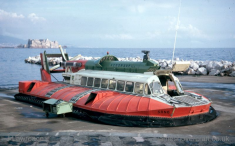
|
Scheda n.7 foto cap.no Pandolfi e Mr. James Lawrence |
|
| Denominazione - Armatore - Tipo | n. 018 - Aeronave SpA - Tipo SR-N6 |
| Costruttore: | BHC-Southampton G.B. (commessa per 2 scafi) |
| Periodo di costruzione: | 1966 |
| Caratteristiche tecniche | Vedi scheda n.4 scafo SR-N6 MMI |
| Inizio servizio: | 1 luglio 1967 il n.18 et agosto stesso anno il n. 28 |
| Carico utile max. | 38/40 passeggeri |
| Comandante | Capitano Sig. Pandolfi |
| Dimensioni appr. metri | L= 14,7 m l=7 m circa 50 kg |
| Vel. max: | 52 nodi |
| Particolarita' | Licenza di nav. concessa dall'Aeronautica Civile. Le specifiche aeronautiche non hanno contribuito alla economicita' di gestione. |
| Note | Impiegati i due scafi sulla rotta Napoli-Capri-Ischia, sulla singola tratta impiegavano soli 25 minuti contro i 40 necessari con l'aliscafo. D'altra parte un aliscafo PT20 trasportava 70 passeggeri. |
| Esistenza alla data 2011 : | Resi a BHC, 018 fu trasportato nelle Canarie e nel 1971
incidentato nel nord Africa. 028 fu invece radiato nel 1975. |
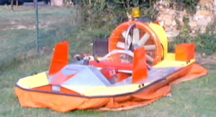
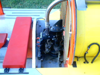
|
Scheda n.8 |
|
| Denominazione | HK5-S modificato |
| Tipo | Monomotore, monoelica, Integrato |
| Costruttore: | M. Del Signore e successivi adattamenti |
| Periodo di costruzione: | 1980-2009 |
| Struttura | Avional rivettato |
| Gonna | Bag unico (originalmente segmentata) |
| Motorizzazione: | Derivata Volvo 3 cilindri-2t. 500cc 30 hp, raffredd. ad acqua |
| Avviamento: |
elettrico |
| Utilizzo | turismo |
| Spinta: | 40 Kg. |
| Carico utile max: | 90 Kg. |
| Pressione al cuscino: | presunti 45 mm. H2O |
| Dimensioni appross.: | mt 3,3 x 1,85 h=0,9 |
| Peso a vuoto: | 150 kg |
| Vel. max su acqua: | 50 km /h |
| Particolarita' costruttive: | Comandi su cloche centrale dx-sin. + acceleratore. Ventola diam. 70 cm circa - Avviamento elettrico |
| Note | Motore ex fuoribordo rovesciato, con piede accorciato mantenendo asse portaelica e rapporto di riduzione. Radiatore posizionato all'interno del convogliatore Pompa dell'acqua maggiorata, esterna |
| Funzionante | Si |
| Esistenza alla data 2011 : | Si, con motore Polaris 3 cil . e prestazioni migliorate |
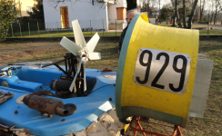
|
Scheda n.9 |
|
| Denominazione | Taifun Formula 2 |
| Tipo | Bimotore, bielica |
| Costruttore: | Taifun Gmbh ( D ) |
| Periodo di costruzione: | 1990 |
| Struttura | Fiberglass |
| Gonna | Segmentata |
| Motorizzazione: | Rotax 377 bicilind. 35 Hp + Sachs monocilindrico 10Hp circa |
| Avviamento: |
a strappo |
| Utilizzo | Competizione sportiva |
| Spinta statica: | > 90 Kg. |
| Carico utile max. | >100 Kg. |
| Pressione al cuscino: | 50 mm. H2O circa |
| Dimensioni appr. metri | 3 x 1,90 |
| Peso a vuoto: | 160 Kg. |
| Vel. max su acqua: | n.d. |
| Particolarita' costruttive: | Lo scafo e' parzialmente perimetrato da un tientibene in
acciaio inox che assolve anche la funzione di paraurti. Ogni segmento della gonna contiene una particolare camera d'aria che aumenta stabilita' e riserva di galleggiamento. Il convogliatore di poppa e' vincolato rigidamente al motore anziche' allo scafo (vedi foto). |
| Note: | Il motore anteriore deriva da una motosega. |
| Funzionante | Si |
| Esistenza alla data 2011 : | Si |
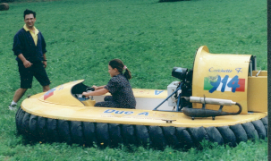
|
Scheda n.10 |
|
| Denominazione | ADOC 3S (F2) |
| Tipo | Monomotore, monoelica, integrato |
| Costruttore: | Ackerman Industrie (Fr ) |
| Periodo di costruzione: | 2000 |
| Struttura | Fiberglass |
| Gonna | Segmentata |
| Motorizzazione: | Arrow 500 cc |
| Avviamento: |
elettrico |
| Utilizzo | Competizione e turismo |
| Spinta | n.d. |
| Carico utile max. | 160 Kg. |
| Pressione al cuscino: | 70 mm. H2O |
| Dimensioni appr. metri | 3,6 x 1,8 h=1,25 - ventola diam.80 cm. |
| Peso a vuoto: | 240 Kg. |
| Vel. max su acqua: | n.d. |
| Particolarita' costruttive: | Ackerman spesso montava un interessante tipo di gonna a segmenti doppi. |
| Note: | In attesa di sostituzione del motore originale con altro piu' facilmente reperibile. |
| Funzionante | In origine si, ora forzatamente fermo. |
| Esistenza alla data 2011 : | Si |